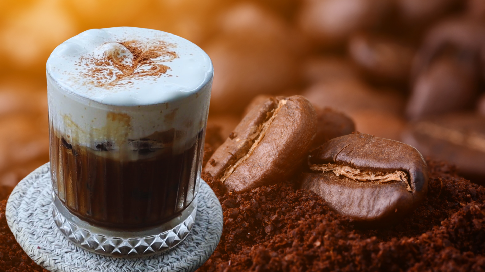
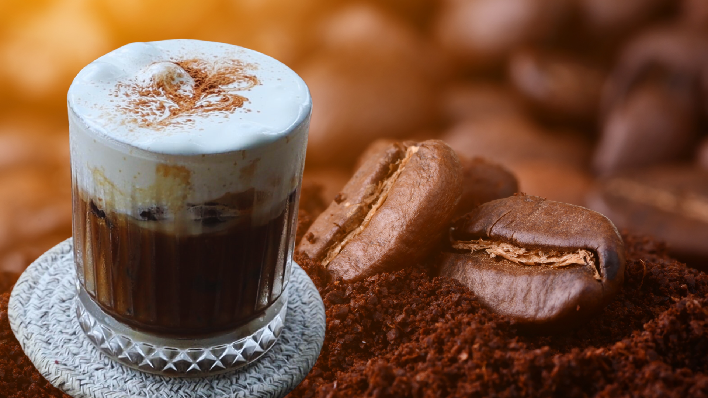

武氏玉蓉 A113070003
世新大學 資訊傳播學系
A113070003@mail.shu.edu.tw
Hello everyone,我是武氏玉蓉來自越南(一個美麗的國家)。我目前在世新大學就讀資訊傳播學系。我個性比較I人，我的社交能力也不太好所以我決定選擇傳播學系來挑戰自己。儘管如此，但到目前為止，我已經認識了不少朋友，也找到了幾個好朋友。認識台灣的朋友讓我的中文進步了很多，也讓我更加了解台灣的文化。 我對畫畫有特別的喜好，尤其喜歡描繪可愛風格的圖畫，例如卡通人物或是可愛的動物。這項活動不僅讓我放鬆心情，還能展現我的創造力。 除了畫畫以外，我也經常聆聽一些現代、節奏輕快的歌曲。那些旋律動聽、歌詞充滿青春氣息的音樂，讓我感到充滿活力與生活靈感。此外，當我對某件事情產生興趣時，我會全力以赴，努力不懈，直到完成為止。 目前在資訊傳播學系，我對科技應用與數位工具越來越有興趣。希望未來能往工程相關領域發展，因為畢業後比較容易找到穩定的工作。再說，工程領域涵蓋範圍廣泛可以根據自己的興趣選擇不同的專業方向。

 
